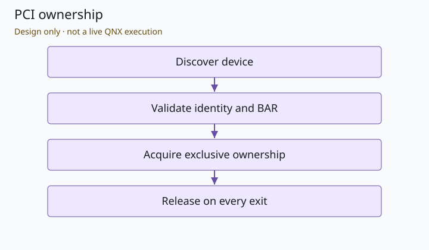
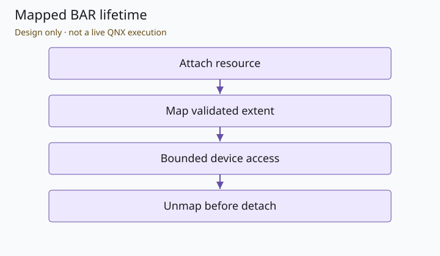
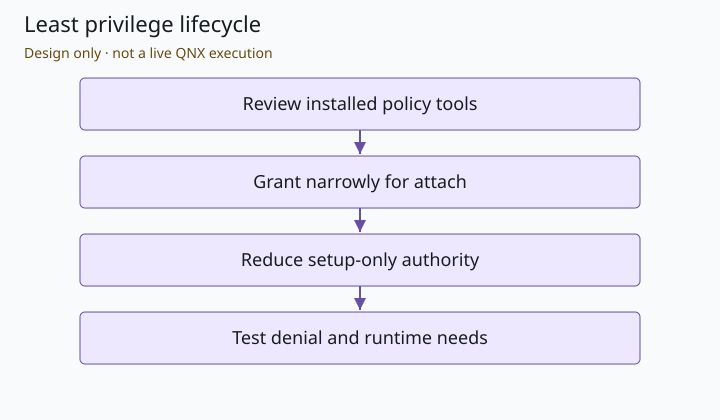

Make a convincing wrong edit — then build your own QNX /dev/edu
1. Your wrong-edit-to-/dev/edu tutorial
Planning estimate: 8 minutes
PRIVATE DRAFT: deliberately fail your own edit despite exit0, correct it, then implement normal /dev/edu I/O. Durations are unmeasured planning estimates. Existing licensed SDK only; no second-SDK or human acceptance. QSTI provenance remains unverified. No production safety, SSH/platform-health, timing or availability claim. Do not publish.
<!-- BEGIN CANONICAL TUTORIAL: generated by tools/tutorial_copy.py -->
Canonical learner tutorial — wrong edit, real failure, own /dev/edu
Licensed Linux x86_64 SDK guest builds → STOP and REAP guest → native QNX on capped HOST QEMU. Hold the sole host lease across this sequence. Never run native QEMU inside the SDK guest.
Single-host: BLOCKED_NATIVE_TIMEOUT, Nov9 receipt. Package/user-bus setup passed, but native attempts timed out before learner markers/appRC. Root cause UNVERIFIED; nested emulation is not established as the cause. No more single-host retries, timeout tuning or cap increases. C6 STOPPED; private £0; no video/publication/SDK login or activation.
Start with the trap: exit0 is not completion
You will edit your own step3 starter, deliberately write12345679 and observe edcba986. That complement can satisfy your application and exit0, yet the independent fixed stage requires12345678→edcba987: FAIL despite application exit0. Correct the edit and rebuild for PASS. Then implement your own step6 manager and use normal shell write/read,10→3628800 with IRQ completion/ack. Explain why the first observation failed before fixing it. This is a learner task, not a reference-checker walkthrough.
Read the original recorded evidence before touching setup: wrong serial log, correct serial log, own finish serial log. These are Nov8 observations from their original builds, not outputs produced by this tutorial edit or host CI. Use their paired receipts below to follow the original source/ELF/IFS/startup/disk/driver bindings. Your new source needs its own build and observation; copying these logs cannot complete a stage.
Recorded journey — not a rerun at this tip
Nov7 supported bootstrap: fresh stock platform, wrong FAIL/app0 → corrected PASS → own /dev/edu10→3628800+IRQack. Nov8 wrapper journey: SDK-guest builds and host-native runs with explicit environment path handoff.
Original source/ELF/IFS/startup/disk/driver bindings stay in immutable receipts. Historical PASS does not validate new edits; documentation/host CI does not rerun QNX. No second-SDK, human learner, physical portability, performance, safety or full-platform/SSH-health acceptance.
0. Separate host and guest paths
Host: this checkout, Python3, Bash, flock, systemd-run and QEMU. Guest: existing licensed Linux x86_64 SDP8/compatible installed Generic x86_64 BSP with qcc/mkifs/mkqnximage. Missing legal inputs means BLOCKED, not SDK install/activation or substitution of old binaries.
On QEMU host, choose fresh external notebook:
export EDU_REPO="$(pwd -P)"
export EDU_WORK="${EDU_WORK:-$HOME/edu-learner-$(date -u +%Y%m%dT%H%M%SZ)}"
export EDU_NATIVE_LOCK="$HOME/.local/state/edu-native-test.lock"
export EDU_QEMU="$(command -v qemu-system-x86_64)"
mkdir -p "$(dirname "$EDU_NATIVE_LOCK")"
export PATH="$(dirname "$EDU_QEMU"):$PATH"
"$EDU_QEMU" --version
command -v flock systemd-run
systemctl --user show-environment >/dev/null
if test -f "$EDU_WORK/session.json"; then
python3 "$EDU_REPO/scripts/learner_session.py" render --work "$EDU_WORK"
else
python3 "$EDU_REPO/scripts/learner_session.py" init --work "$EDU_WORK"
fi
If README already initialized EDU_WORK, keep that value instead of assigning a new one. Open cockpit.html: predict, download notes and import via its local notes command. Both starters exist; do not reinitialize. Notebook is HOST notes/export; split standalone native receipts do not automatically become notebook attempts. No receipt import exists.
Define the handoff once, before first use
Two terminals: HOST is this checkout/native-QEMU machine; SDK GUEST is the existing licensed Linux x86_64 VM. All paths below are examples you must adapt to existing authorized mounts. They are not new resources. Stop if access, mount mapping, packaged QEMU or the real user bus is missing; this tutorial installs/activates nothing. Guest platform/bundles MUST live on guest local disk, not9p.
# HOST: within the already initialized EDU_WORK
export EDU_SHARED_HOST="$HOME/qnx-host/guest/shared" # existing authorized share
export EDU_HANDOFF="edu-$(date -u +%Y%m%dT%H%M%SZ)"
export EDU_OUT="$EDU_WORK/split/$EDU_HANDOFF"
mkdir -p "$EDU_SHARED_HOST/$EDU_HANDOFF" "$EDU_OUT"
printf '%s\n' "$EDU_HANDOFF" > "$EDU_SHARED_HOST/$EDU_HANDOFF/nonce.txt"
cp "$EDU_REPO/scripts/learner_lab.py" "$EDU_REPO/scripts/learner_clean_preflight.py" "$EDU_REPO/scripts/learner_bootstrap.sh" "$EDU_REPO/scripts/learner-step3.build.in" "$EDU_SHARED_HOST/$EDU_HANDOFF/"
# Pause here: complete your own step3 TODOs (section1) BEFORE copying it; never copy a solution:
cp "$EDU_WORK/step3/main.c" "$EDU_SHARED_HOST/$EDU_HANDOFF/step3-main.c"
sha256sum "$EDU_SHARED_HOST/$EDU_HANDOFF/"* > "$EDU_OUT/input-hashes.txt"
Pass the literal EDU_HANDOFF value printed by HOST into SDK GUEST; variables do not cross machines. Start the existing capped SDK controller only after the HOST owner has acquired the sole lease below.
# SDK GUEST: existing licensed user; use your actual installed paths
export EDU_HANDOFF='REPLACE_WITH_HOST_HANDOFF_VALUE'
export EDU_SHARED_GUEST="/mnt/host/$EDU_HANDOFF" # maps HOST share/$EDU_HANDOFF
export EDU_GUEST_ROOT="$HOME/edu-builds/$EDU_HANDOFF"
export EDU_SDP_ENV="$HOME/qnx800/qnxsdp-env.sh"
export EDU_PLATFORM="$EDU_GUEST_ROOT/platform"
export EDU_GUEST_LAB="$EDU_SHARED_GUEST/learner_lab.py"
export EDU_SNIPPET="$EDU_SHARED_GUEST/learner-step3.build.in"
export EDU_GUEST_SOURCE="$EDU_GUEST_ROOT/step3-main.c"
export EDU_GUEST_BUNDLE="$EDU_GUEST_ROOT/step3-wrong"
export EDU_STEP3_GUEST_BUNDLE="$EDU_GUEST_BUNDLE"
test "$(cat "$EDU_SHARED_GUEST/nonce.txt")" = "$EDU_HANDOFF"
mkdir -p "$EDU_GUEST_ROOT"
cp "$EDU_SHARED_GUEST/step3-main.c" "$EDU_GUEST_SOURCE"
sha256sum "$EDU_SHARED_GUEST/"* "$EDU_GUEST_SOURCE"
Compare script/source hashes with HOST input-hashes.txt (paths differ; bytes must not). No spaces in these paths. EDU_GUEST_ROOT, EDU_PLATFORM and bundle are fresh external paths. Use the preserved guest variable values in every later guest job. The constrained service prerequisites in section2 come before any build command on a512MiB guest; the controller/transport/job ownership are existing infrastructure, not supplied SDK setup or a portable host installer.
Keep an actual owner terminal holding the host flock from before SDK launch through native cleanup:
# HOST owner terminal: this subshell is the only authorized execution context.
# Existing controller calls and ALL later HOST native commands run inside it.
flock -n "$EDU_NATIVE_LOCK" bash
# Failure to enter means STOP. Do not acquire another nested flock inside.
# After all native processes are stopped/reaped: exit this subshell to release.
An unexported lease token alone is not ownership. Never launch a guest before entering that subshell. Commands in other HOST terminals must be explicitly dispatched by the actual owner, not run against an unrelated held lock. All QEMU: effectiveCPU100%, MemoryMax1GiB, nice15,1vCPU/512MiB. Use existing legitimate capped SDK controller, not legacy uncapped launchers. Repository does not supply that controller/transport; stop if authorized access is absent.
1. Predict and edit step3 on host
Edit EDU_WORK/step3/main.c, not solution/reference sources. Complete BAR TODO: per-thread I/O level1, metadata, memory BAR0 extent≥0x1000, uncached mapping, actual IDr[0], volatile write/readr[1]. Preserve errors/unmap/detach. Emit exactly one parser row with actual register values (not constants):
printf("LEARNER_MMIO id=%08x write=%08x read=%08x\n", id, written, observed);
Use real variables from your implementation. Require EDU ID010000ed; reject wrong ID/BAR bounds.
Predict wrong12345679→edcba986. Program may check that complement and exit0, but fixed stage requires12345678→edcba987. Wrong observation must FAIL despite app0; printing PASS is insufficient. Save prediction, then diagnosis/explanation after observing.
2. Build only inside existing licensed SDK guest
Choose guest absolute paths: EDU_GUEST_LAB (copied standalone learner_lab.py), EDU_GUEST_SOURCE (your copied C), EDU_GUEST_BUNDLE (fresh output), EDU_PLATFORM (fresh guest-disk platform), EDU_SDP_ENV, EDU_SNIPPET (copied original fragment). No spaces in snippet paths. Verify guest source SHA256 equals current host source.
Inside SDK guest, existing licensed user: create the job on guest disk; this only writes your own script. On512MiB use the isolated service below rather than building inside the root queue. The captured values are those defined in section0.
export EDU_JOB="$EDU_GUEST_ROOT/build-step3.sh"
export EDU_LOG="$EDU_GUEST_ROOT/build-step3.log"
export EDU_UNIT="edu-build-$EDU_HANDOFF"
{
printf '#!/bin/bash\nset -eo pipefail\n'
declare -p EDU_GUEST_SOURCE EDU_GUEST_BUNDLE EDU_SDP_ENV EDU_PLATFORM EDU_SNIPPET EDU_SHARED_GUEST EDU_GUEST_LAB
cat <<'BUILD'
export EDU_SOURCE="$EDU_GUEST_SOURCE"
export EDU_ACTIVE="$EDU_GUEST_BUNDLE"
python3 "$EDU_SHARED_GUEST/learner_clean_preflight.py" --sdp-env "$EDU_SDP_ENV" --fresh-work "$EDU_PLATFORM"
bash "$EDU_SHARED_GUEST/learner_bootstrap.sh"
python3 "$EDU_GUEST_LAB" build --stage step3 --source "$EDU_GUEST_SOURCE" --out "$EDU_GUEST_BUNDLE" --sdp-env "$EDU_SDP_ENV" --buildfile "$EDU_PLATFORM/output/build/ifs.build" --bsp-cwd "$EDU_PLATFORM"
BUILD
} > "$EDU_JOB"
bash -n "$EDU_JOB"
On a correction, use a new job/log/unit name and a job containing only the standalone build line after copying/verifying the corrected source; omit preflight/bootstrap because the platform already exists. For step6 use the explicit step6 regeneration/build block in section4 as the new job payload, capturing the newly selected variables as above.
Bootstrap uses installed mkqnximage, fresh stock kernel/disk and learner-only snippets; preseed is not completion. Recorded versions: SDP8/Generic x86_64 BSP0.0.1.00050T202311201204L, mkqnximage0.5.0.00132T202605281115L; native host QEMU8.2.2 pcTCG. Existing SDK reuse is not new installation.
Constrained guest prerequisites
On512MiB SDK guest, inspect/reactivate only existing authorized1GiB disk swap: owner/size/free-space checks first; no overwrite/fstab/cap change, stop if absent. Choose EDU_SWAP, EDU_BUILD_USER, EDU_BUILD_HOME (existing licensed home), unique EDU_UNIT, user-owned EDU_JOB and external EDU_LOG. Guest root, authorized existing access only. A root queue command does not inherit the licensed user's shell: set these values explicitly to the same handoff and existing user/home (examples qnx and /home/qnx), and the already-created job/log. EDU_SWAP must name an existing authorized swap file, not a proposed file to create:
set -euo pipefail
export EDU_HANDOFF='REPLACE_WITH_HOST_HANDOFF_VALUE'
export EDU_BUILD_USER=qnx
export EDU_BUILD_HOME=/home/qnx
export EDU_JOB="$EDU_BUILD_HOME/edu-builds/$EDU_HANDOFF/build-step3.sh"
export EDU_LOG="$EDU_BUILD_HOME/edu-builds/$EDU_HANDOFF/build-step3.log"
export EDU_UNIT="edu-build-$EDU_HANDOFF"
export EDU_SWAP='/absolute/path/to/existing/authorized/1GiB-swapfile'
test "$(stat -c %U "$EDU_JOB")" = "$EDU_BUILD_USER"
test "$(stat -c %U "$EDU_SWAP")" = root
Stop if the verified existing user, owner or path differs; adapt paths deliberately, never create accounts/swap or bypass authorization. Then inspect:
df -h "$(dirname "$EDU_SWAP")"
stat "$EDU_SWAP"
test "$(stat -c %s "$EDU_SWAP")" = 1073741824
swapon --show
if ! swapon --show=NAME --noheadings | grep -Fx "$EDU_SWAP"; then swapon "$EDU_SWAP"; fi
free -m
systemctl is-active host-queue.service
systemctl show host-queue.service -p NRestarts
Stop on mismatch or unavailable authorization. Never create/resize swap here. Platform/bundle on guest disk, not9p. Existing authorized guest root runs user-owned job via isolated transient service, HOME set for licensed user; keep queue separate:
# Guest root; chosen external job/log and existing licensed user:
systemd-run --unit="$EDU_UNIT" --property="User=$EDU_BUILD_USER" --setenv="HOME=$EDU_BUILD_HOME" --property=OOMPolicy=stop --property=RuntimeMaxSec=1830 --property="StandardOutput=file:$EDU_LOG" --property=StandardError=inherit /usr/bin/timeout --kill-after=15 1800 /bin/bash "$EDU_JOB"
# Wait for terminal state, not active/status0:
systemctl show "$EDU_UNIT" -p ActiveState -p Result -p ExecMainStatus -p MainPID
systemctl show host-queue.service -p ActiveState -p NRestarts
Require inactive/Resultsuccess/ExecMainStatus0/MainPID0, queue active/no restart. EDU_JOB captures guest variables and set -eo pipefail; the service supplies the licensed HOME. For each new job recheck ownership and use matching job/log/unit names in both terminals. Retain logs externally; stop on OOM/failure/transport uncertainty. Do not substitute notebook build pointing to host paths.
3. Transfer own bundle/disk, STOP/REAP guest, observe on HOST
Before shutdown, SDK GUEST copies only its own fresh output through the authorized share:
# SDK GUEST, only after build completed with exit0; wrong attempt first
export EDU_ATTEMPT=step3-wrong
mkdir -p "$EDU_SHARED_GUEST/$EDU_ATTEMPT"
cp -a "$EDU_GUEST_BUNDLE/." "$EDU_SHARED_GUEST/$EDU_ATTEMPT/"
cp "$EDU_PLATFORM/output/disk-qemu" "$EDU_SHARED_GUEST/$EDU_ATTEMPT-disk-qemu"
(cd "$EDU_SHARED_GUEST"; sha256sum "$EDU_ATTEMPT/"* "$EDU_ATTEMPT-disk-qemu") > "$EDU_SHARED_GUEST/$EDU_ATTEMPT-hashes.txt"
# HOST, before STOP: verify then preserve private original transfer
(cd "$EDU_SHARED_HOST/$EDU_HANDOFF"; sha256sum -c step3-wrong-hashes.txt)
cp -a "$EDU_SHARED_HOST/$EDU_HANDOFF/step3-wrong" "$EDU_OUT/"
cp "$EDU_SHARED_HOST/$EDU_HANDOFF/step3-wrong-disk-qemu" "$EDU_SHARED_HOST/$EDU_HANDOFF/step3-wrong-hashes.txt" "$EDU_OUT/"
(cd "$EDU_OUT"; sha256sum -c step3-wrong-hashes.txt)
Stop on hash mismatch. Host and guest lines run in their explicitly labeled terminals; they are not one shell script. Inventory covers source snapshot, manifest, ELF, IFS, startup and matching disk. Preserve immutable per-attempt copies before rebuilding. Licensed bytes stay external.
STOP and REAP SDK guest with existing controller; collect terminal exit and prove no SDK QEMU process. Retain host lease. Set EDU_HOST_SOURCE to matching source snapshot, EDU_HOST_BUNDLE to transferred bundle, EDU_HOST_DISK to transferred disk, EDU_RECEIPT to new external basename. Compare transfer hashes with guest inventory. QEMU host only:
EDU_RECEIPT names a prefix, not a directory. Driver writes PREFIX.json and PREFIX.log. Before running on HOST define:
# HOST owner terminal: transferred bytes, not guest absolute paths
export EDU_HOST_SOURCE="$EDU_OUT/step3-wrong/learner-source.c"
export EDU_HOST_BUNDLE="$EDU_OUT/step3-wrong"
export EDU_HOST_DISK="$EDU_OUT/step3-wrong-disk-qemu"
export EDU_RECEIPT="$EDU_OUT/step3-wrong-observation"
# Inside existing owner-held sole lease, NEVER SDK guest:
env EDU_NATIVE_LOCK="$EDU_NATIVE_LOCK" EDU_NATIVE_LEASE=granted python3 "$EDU_REPO/scripts/learner_lab.py" run --stage step3 --source "$EDU_HOST_SOURCE" --bundle "$EDU_HOST_BUNDLE" --disk "$EDU_HOST_DISK" --receipt "$EDU_RECEIPT"
Driver checks held lease/effective caps;1cpu/512MiB/snapshot disk; stops/reaps native QEMU. Wrong host1 with targetRC0/readedcba986 is intended negative; host2 is BLOCKED, timeout/appRCabsent is not intended negative. Read "$EDU_RECEIPT.json" and "$EDU_RECEIPT.log", not app PASS.
Fix host own source12345678; select a fresh handoff/source snapshot for the correction. Restart only the serialized SDK build phase, under the same HOST lease after prior native process is reaped. In guest keep EDU_GUEST_BUNDLE pointing to its original step3 path, so the existing buildfile references remain valid; build archives are immutable in HOST EDU_OUT, not this active path. Set EDU_ATTEMPT=step3-correct for transfer, use corresponding step3-correct paths/prefix on HOST (do not overwrite wrong observation). Copy corrected host C to EDU_GUEST_SOURCE and compare SHA256 before build. Bootstrap/preflight fresh-platform creation runs once, not against an existing platform. Preserve the wrong bundle/disk first. For corrected step3 retain the active snippet path and rerun standalone build with the corrected source; archive its fresh bundle/disk before further changes. Alternatively choose a fresh platform/bundle and bootstrap it. Transfer verified matching bytes, STOP/REAP guest again, host run with new receipt basename. Require host0/readedcba987/QNX8/source+ELF+IFS+disk bindings/bounded completion/reaped. Never reuse historical PASS/edit manifests. Reading route is not authorization for new runs.
4. Own /dev/edu finish — same split barrier
Save step6 prediction; complete starter dispatch/iofunc, bounded handlers, per-open snapshots and final /dev/edu registration. Transaction owns IAT: initial unmask before trigger, InterruptWait with _NTO_INTR_WAIT_FLAGS_UNMASK, device acknowledge, detach before stdio/dispatch; no redundant InterruptUnmask/startup IST blocked in dispatch. No polling fallback/reference priming.
On HOST preserve your own completed step6 C as share/$EDU_HANDOFF/step6-main.c and its hash; do not substitute finish-source.c from recorded evidence. After starting only the serialized SDK build phase, define in SDK GUEST:
export EDU_GUEST_SOURCE="$EDU_GUEST_ROOT/step6-main.c"
export EDU_GUEST_BUNDLE="$EDU_GUEST_ROOT/step6-finish"
cp "$EDU_SHARED_GUEST/step6-main.c" "$EDU_GUEST_SOURCE"
sha256sum "$EDU_GUEST_SOURCE" "$EDU_SHARED_GUEST/step6-main.c"
export EDU_ATTEMPT=step6-finish
Keep EDU_STEP3_GUEST_BUNDLE pointing to the prior active step3 bundle. Repoint snippet before regeneration. Temporary preseed is not acceptance:
# SDK guest only; fresh step6 source/bundle selected:
mkdir -p "$EDU_GUEST_BUNDLE"
cp "$EDU_STEP3_GUEST_BUNDLE/learner_bin" "$EDU_GUEST_BUNDLE/learner_bin"
printf '#!/bin/sh\nexit 2\n' > "$EDU_GUEST_BUNDLE/learner-start.sh"
sed "s|@OUT@|$EDU_GUEST_BUNDLE|g" "$EDU_SNIPPET" > "$EDU_PLATFORM/local/snippets/ifs_files.learner"
bash -c 'set -eo pipefail; source "$EDU_SDP_ENV"; cd "$EDU_PLATFORM"; mkqnximage --build'
python3 "$EDU_GUEST_LAB" build --stage step6 --source "$EDU_GUEST_SOURCE" --out "$EDU_GUEST_BUNDLE" --sdp-env "$EDU_SDP_ENV" --buildfile "$EDU_PLATFORM/output/build/ifs.build" --bsp-cwd "$EDU_PLATFORM"
Set EDU_SDP_ENV, EDU_PLATFORM, EDU_SNIPPET and all guest paths explicitly in the job; the snippet path must match the selected bundle. Same isolated service/hash handoff; replace step3-wrong with step6-finish in all transfer, inventory, HOST source/bundle/disk/receipt variables. The corrected step3 cycle similarly uses step3-correct as its immutable transfer label. STOP/REAP SDK guest, then host-only section3 standalone command with --stage step6 and matching step6 source/bundle/disk/new receipt. Require real shell write10/read3628800, IRQcompletion1/input10/result3628800/ack00000000, bindings/reaping. Daemon termination143 is not graceful lifecycle proof. Preserve failures; explain device ack/kernel unmask/dispatch ownership.
5. Honest evidence/export boundaries
Notebook notes export is HOST unless its own wrapper actually recorded observations. Split standalone artifacts stay in separately labeled external pack: own C/history, every build manifest/ELF/IFS/startup, native receipts/logs, original matching disks and SHA256 inventory. Licensed bytes outside git; no upload/forged notebook records/reference import. Nov8 wrapper export used explicitly mapped existing environment, not arbitrary identical guest/host paths.
Single-host remains BLOCKED_NATIVE_TIMEOUT/rootcauseUNVERIFIED. Nov9 failure export is valid failure evidence, not completion. No more single-host runs/tuning. Human learner/secondSDK/physical portability/lifecycle/timing/path policy/full-platform health unverified.
Historical reference appendix — not another entry route
Historical codelab, six E1/E2 snapshots, check-reference-step1..6, host model/qtest remain reference. Capability ledger, cockpit help, private review. No video; C6 STOPPED; private £0; independent review required.
<!-- END CANONICAL TUTORIAL -->
Historical reference appendix begins here — NOT learner acceptance
The remaining numbered sections preserve reference explanations, not additional
mandatory learner stages. Never substitute their reference checks for your edits.
Start from the unchanged verified E1 implementation for comparison, not as a substitute for executing learner edits. Evidence: native receipt, serial transcript, clean checkout receipt. These are historical artifacts, never input to live acceptance. Build order and exact scope.
Mini-map: [1] → 2 → 3 → 4 → 5 → 6

Work through the source
Use uname to distinguish a real QNX process from a host build. Keep the licensed SDK, IFS, disk and build outputs outside the checkout. Record the authorized SDP 8.0 toolchain, x86_64 target, QEMU 8.2.2 TCG and image checksum. A host model is not a target.
Read the starter task and bounded TODO in starter main.c. Compare the solution explanation and solution main.c only after attempting the boundary. These are actual source snapshots, not unconditional includes of an accumulated probe.
Build and check
Host, repository root; no SDK or guest is started by the first two commands:
python3 tools/step_sources.py --check
./verify.sh --host-only
make check-reference-step1
The live command is owner-controlled: obtain the exclusive native lease and external source/image-bound bundle first. Without them it is BLOCKED (exit 2). It boots the accumulated unchanged E1 reference and requires ALL six markers plus IRQ resource-manager/client/shell checks, even when selecting step 1; it does not certify an edited learner binary or independently execute this snapshot. The source-contract check rejects modified snapshots before boot. Never supply saved transcripts or fixtures as live evidence.
Expected reference marker from a fresh successful target: EDU STEP1 PASS QNX target process. Retain the entire transcript and receipt, not this expected string.
2. PCI discovery and ownership
Planning estimate: 8 minutes
Mini-map: 1 → [2] → 3 → 4 → 5 → 6

Work through the source
Read main from ThreadCtl(IO_LEVEL_1) through pci_device_find and pci_device_attach. The tested x86 PCI module needs checked per-thread I/O level 1: no inherited level 2. Match vendor 0x1234/device 0x11e8; attach EXCLUSIVE and detach. Missing device or failed attach must stop, never dereference a bad handle.
Read the starter task and bounded TODO in starter main.c. Compare the solution explanation and solution main.c only after attempting the boundary. These are actual source snapshots, not unconditional includes of an accumulated probe.
Build and check
Host, repository root; no SDK or guest is started by the first two commands:
python3 tools/step_sources.py --check
./verify.sh --host-only
make check-reference-step2
The live command is owner-controlled: obtain the exclusive native lease and external source/image-bound bundle first. Without them it is BLOCKED (exit 2). It boots the accumulated unchanged E1 reference and requires ALL six markers plus IRQ resource-manager/client/shell checks, even when selecting step 2; it does not certify an edited learner binary or independently execute this snapshot. The source-contract check rejects modified snapshots before boot. Never supply saved transcripts or fixtures as live evidence.
Expected reference marker from a fresh successful target: EDU STEP2 PASS PCI server attach. Retain the entire transcript and receipt, not this expected string.
3. BAR mapping and liveness
Planning estimate: 4 minutes
Mini-map: 1 → 2 → [3] → 4 → 5 → 6

Work through the source
Read pci_device_read_ba and the BAR0 loop. Require a memory BAR, sufficient extent, and a valid mmap_device_memory result before MMIO. The verified reference maps 0x1000 bytes; the probe checks a smaller minimum extent whereas the resource manager requires the full mapping extent. Do not generalize that probe precondition to arbitrary hardware. At byte offsets 0x00 and 0x04, require ID 0x010000ed and the 32-bit complement of 0x12345678. Unmap and detach on every acquired-resource failure.
Read the starter task and bounded TODO in starter main.c. Compare the solution explanation and solution main.c only after attempting the boundary. These are actual source snapshots, not unconditional includes of an accumulated probe.
Build and check
Host, repository root; no SDK or guest is started by the first two commands:
python3 tools/step_sources.py --check
./verify.sh --host-only
make check-reference-step3
The live command is owner-controlled: obtain the exclusive native lease and external source/image-bound bundle first. Without them it is BLOCKED (exit 2). It boots the accumulated unchanged E1 reference and requires ALL six markers plus IRQ resource-manager/client/shell checks, even when selecting step 3; it does not certify an edited learner binary or independently execute this snapshot. The source-contract check rejects modified snapshots before boot. Never supply saved transcripts or fixtures as live evidence.
Expected reference marker from a fresh successful target: EDU STEP3 PASS BAR ID and complement. Retain the entire transcript and receipt, not this expected string.
4. Bounded factorial polling
Planning estimate: 4 minutes
Mini-map: 1 → 2 → 3 → [4] → 5 → 6

Work through the source
Read the status register at 0x20 (r[8]) and factorial at 0x08 (r[2]). Disable factorial IRQ for this polling exercise, submit 10, then test busy at most 1000 one-millisecond sleeps. Require completion and 3628800; an iteration budget is not a measured wall-clock guarantee. The client contract in step6 accepts only 0..12 to avoid unsigned 32-bit overflow.
Read the starter task and bounded TODO in starter main.c. Compare the solution explanation and solution main.c only after attempting the boundary. These are actual source snapshots, not unconditional includes of an accumulated probe.
Build and check
Host, repository root; no SDK or guest is started by the first two commands:
python3 tools/step_sources.py --check
./verify.sh --host-only
make check-reference-step4
The live command is owner-controlled: obtain the exclusive native lease and external source/image-bound bundle first. Without them it is BLOCKED (exit 2). It boots the accumulated unchanged E1 reference and requires ALL six markers plus IRQ resource-manager/client/shell checks, even when selecting step 4; it does not certify an edited learner binary or independently execute this snapshot. The source-contract check rejects modified snapshots before boot. Never supply saved transcripts or fixtures as live evidence.
Expected reference marker from a fresh successful target: EDU STEP4 PASS factorial polling. Retain the entire transcript and receipt, not this expected string.
5. IAT interrupt and polled DMA
Planning estimate: 10 minutes
Mini-map: 1 → 2 → 3 → 4 → [5] → 6

Work through the source
Read pci_device_read_irq, InterruptAttachThread and InterruptWait in the probe. Clear stale status (ack 0x64), attach with TRK_MSK, arm a two-second TimerTimeout, raise bit 1 at 0x60, verify own pending bit at 0x24 and acknowledge before detach. Default attach initially unmasks: an extra unmask at count zero returns EAGAIN. Then inspect edu_dma_roundtrip: contiguous uncached MAP_PHYS memory, mem_offset physical range inside 32-bit dma_mask, checked bus mastering, two bounded 64-byte transfers and byte comparison. QEMU device buffer starts at 0x40000; never substitute a virtual pointer for the physical bus address. DMA completion is POLLED, not an IRQ claim. On failed quiescence the reference retains the allocation until the bounded external VM owner stops it.
Read the starter task and bounded TODO in starter main.c. Compare the solution explanation and solution main.c only after attempting the boundary. These are actual source snapshots, not unconditional includes of an accumulated probe.
Build and check
Host, repository root; no SDK or guest is started by the first two commands:
python3 tools/step_sources.py --check
./verify.sh --host-only
make check-reference-step5
The live command is owner-controlled: obtain the exclusive native lease and external source/image-bound bundle first. Without them it is BLOCKED (exit 2). It boots the accumulated unchanged E1 reference and requires ALL six markers plus IRQ resource-manager/client/shell checks, even when selecting step 5; it does not certify an edited learner binary or independently execute this snapshot. The source-contract check rejects modified snapshots before boot. Never supply saved transcripts or fixtures as live evidence.
Expected reference marker from a fresh successful target: EDU STEP5 PASS IAT wait acknowledge. Retain the entire transcript and receipt, not this expected string.
Additional required evidence: EDU DMA 64-byte RAM->EDU->RAM byte-exact PASS (polled, no DMA IRQ claim). The IRQ marker alone cannot prove DMA success.
6. IAT-backed resource manager
Planning estimate: 10 minutes
Mini-map: 1 → 2 → 3 → 4 → 5 → [6]

Work through the source
Read factorial, parse_command, edu_write, edu_read and main in the resource-manager solution. One dispatch thread owns PCI, IAT and registers. Each synchronous successful write uses InterruptWait, checks pending AND not-busy, acknowledges and unmasks before publishing. No polling fallback. A write is one complete command: 1–2 ASCII digits, optional LF, maximum three bytes, 0..12. Nonblocking requests return EAGAIN; results have per-open snapshots, offsets and EOF. Register /dev/edu mode 0660 only after PCI/BAR/IAT setup; dispatch remains a long-running process.
Read the starter task and bounded TODO in starter main.c. Compare the solution explanation and solution main.c only after attempting the boundary. These are actual source snapshots, not unconditional includes of an accumulated probe.
Build and check
Host, repository root; no SDK or guest is started by the first two commands:
python3 tools/step_sources.py --check
./verify.sh --host-only
make check-reference-step6
The live command is owner-controlled: obtain the exclusive native lease and external source/image-bound bundle first. Without them it is BLOCKED (exit 2). It boots the accumulated unchanged E1 reference and requires ALL six markers plus IRQ resource-manager/client/shell checks, even when selecting step 6; it does not certify an edited learner binary or independently execute this snapshot. The source-contract check rejects modified snapshots before boot. Never supply saved transcripts or fixtures as live evidence.
Expected reference marker from a fresh successful target: EDU STEP6 PASS. Retain the entire transcript and receipt, not this expected string.
On the authorized QNX target with the reference manager running (do not start a second exclusive owner):
printf '10\n' > /dev/edu
cat /dev/edu
# 3628800
Require EDU RESMGR IRQ completion with input=10 result=3628800 ack=00000000, EDU RESMGR ACCEPT PASS and EDU_SHELL_RESULT=3628800 in the complete harness run. The manager alone does not emit the step6 acceptance marker; native/edu_accept.c and shell checks do. Partial reads, invalid input, range errors and nonblocking checks are exercised by that client; arbitrary concurrency and production recovery are not established.
Congratulations — evidence, not elapsed time
Planning estimate: 0 minutes
Mini-map: setup → PCI → BAR → polling → IAT + polled DMA → IAT resmgr.
You have a scoped reference to study, not a measured 44-minute learner result. E1 functional native PASS does not establish fresh-learner reproducibility, QSTI provenance, least-privilege policy or physical hardware safety. Keep those gates open.
Security and DMA ownership
Planning estimate: 0 minutes

Review failing operations and narrowly required abilities; do not solve EPERM by broadly granting everything. The policy specification is not validated secpol syntax.

The reference is specific to the tested x86 QEMU PC with no IOMMU and dma_mask=0xffffffff. Do not transfer its uncached physical-memory strategy to arbitrary hardware. Learning notes and claat export scope separate local host rendering, actual upstream export and live target execution. No CAN module is part of this course.
Scoped learner /dev/edu result — 7 November 2026
Edited step6 starter on the same fresh stock generic platform passed actual normal write/read10→3628800 and IRQ completion/ack. Source, binary, image, disk and caps are bound in the learner finish evidence. No reference checker, host result injection or polling fallback. Earlier failures remain; startup Memory fault still excludes a healthy-SSH/all-platform claim. Owner completion gate is CONDITIONAL, receipt-inspected not re-run; no safety/timing acceptance; C6 stays STOPPED.